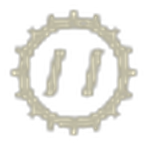
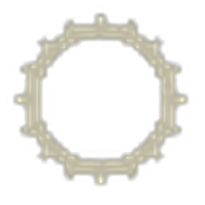

01 · Apartado
Primero elegí un tipo de clase; se despliegan sus clases. Pasá el mouse por una clase para ver su burbuja, y hacé clic para abrir su página de tutoriales.
Clic en un tipo → se despliegan sus clases. En celular, tocá una clase para ver la info y tocá de nuevo para abrir su página.
AT + Ingeniero pegados a un Soporte. Esa caja explosiva es, literalmente, lo que le permite a un solo antitanque reventar un pesado recargando munición especial. Sin Soporte pegado, el AT queda de adorno con 2 cohetes y el Ingeniero pone unas pocas minas y chau.
Gameplay Infantería
CQB, corta y media distancia. Acá se define el punto.
Humos de ataque para cubrir el avance; en defensa no. Proactividad con las granadas: en CQB una bien tirada resuelve un cuarto entero.
Gameplay Tanquista
La tripulación son tres, y cada puesto tiene su laburo.

Llama los tiros. Binoculares y línea directa con comando, oficiales y armor. Decide posiciones, objetivos y cuándo entrar o salir.
Cómo mejorar ↗
Opera el cañón. Detalle clave: cuanto más zoom, más lento gira la torreta —alejá el zoom para velocidad, acercalo para precisión—. El MG del tanque alcanza para reventar vehículos ligeros.
Cómo mejorar ↗Maneja y reposiciona. Mantener el frente hacia el enemigo cuando conviene y, sobre todo, no exponer los laterales ni la retaguardia. La movilidad bien usada gana el duelo antes de disparar.
Cómo mejorar ↗Al pesado enemigo no lo enfrenten de frente. Buscá el flanco o la retaguardia; ahí está el daño real.